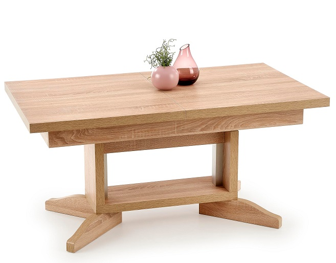

Apvalūs Stalai | Furnibay
 Apie mus Blogas D.U.K Kontaktai Norų sąrašas PrisijungtiNEMOKAMAS PRISTATYMAS VISIEMS BALDAMS
€ 0.00 (0)
Krepšelis
+3706 949 4449
Valgomojo Baldai Baro Kėdės Kėdės Komodos Stalai Indaujos Svetainės Baldai Foteliai Kavos Staliukai Konsolės Pufai Sekcijos Sofos Šoniniai Staliukai TV Staliukai Miegamojo Baldai Dvigulės Lovos Komodos Spintelės prie lovos Čiužiniai Minkštasuoliai Interjero Detalės Aksesuarai Veidrodžiai Kilimai Paveikslai Šviestuvai Lubiniai Pakabinami Sieniniai Staliniai Toršerai Biuro Baldai Darbo Stalai Biuro KėdėsApvalūs Stalai
Visi RūšiavimasFiltruoti pagal kainą
Rikiuoti pagal
Produktų Stilistika
Auksas interjere Dovanu kuponas Elegantiška forma, paryškintas medinis išlenktas kūnas. Komfortas ir išskirtinumas yra keletas šios koncepcijos pagrindinių savybių. Elegantiškas formos siekis paverčia kiekvieną erdvę patogia ir modernia. Ispaniški Trendai Išskirtinės formos kėdė sukurta keliems tikslams ir pritaikyta skirtingoms auditorijoms. Kalėdinis terminas Klasika Komplektuojamos Lovos Komplektuojamos Sofos kėdė Modernas Modernios klasikos kolekcija Portugališki baldai Su miegamu mechanizmu valgomojo kėdė Šiandienos trendai Pradžia / Valgomojo Baldai / Stalai / Apvalūs StalaiRodoma 1–24 iš 34
LUNGO apvalus stalas
€ 363.00 120x120x76 cmLOOPER apvalus stalas
€ 169.00 115x115x76 cmAVELAR apvalus stalas
€ 242.00 120x120x76 cmValgomojo stalas Karat
€ 370.00 75x100Valgomojo stalas John
€ 555.00 73x95Aplvalus stalas Oddysey
€ 1,488.00 – € 1,850.00 77x120/130/140/150Valgomojo stalas Didi
€ 260.00 73x100Valgomojo stalas Marble
€ 970.00 – € 1,130.00 74 x 90/120Stalas Glam
€ 425.00 AKCIJAValgomojo stalas Kensi
€ 2,320.00 € 2,000.00 140 x 75 AKCIJAValgomojo stalas Black 2
€ 2,001.00 € 1,800.00Valgomojo stalas Dinasti
€ 1,565.00 130 x 76Valgomojo stalas Grand
€ 873.00 73 x 110Stalas Essai
€ 341.00 – € 375.00 80x120x77 cmStalas ELIXA
€ 900.00 – € 1,002.00 90x180x75 cmStalas ELISSE
€ 869.00 – € 1,038.00 90x180x75 cmRAYMOND apvalus stalas
€ 167.00 100x100x73 cmPIXEL apvalus stalas
€ 334.00 120x120x76 cmELIF apvalus stalas
€ 186.00 120x120x77 cmCORAL apvalus stalas
€ 387.00 100x180x76 cmSLIM apvalus stalas
€ 227.00 100x100x76 cmBELATO apvalus stalas
€ 227.00 120x120x76 cmPIXEL 2 Apvalus stalas
€ 290.00 120x120x76 cmMORGAN Apvalus stalas
€ 165.00 120x120x76 cm 1 2© 2020 UAB Furnibay |
Pirkimo Taisyklės Prekių grąžinimas Kontaktai*Be UAB Furnibay sutikimo draudžiama kopijuoti ir platinti svetainėje esančią informaciją.
Facebook Instagram Google Twitter Linkedin Tumblr Mūsų svetainėje naudojami slapukai, kad užtikrintume jums teikiamų paslaugų ir aktualių pasiūlymų kokybę. Jei sutinkate, spustelėkite mygtuką „Sutinku". Sutinku